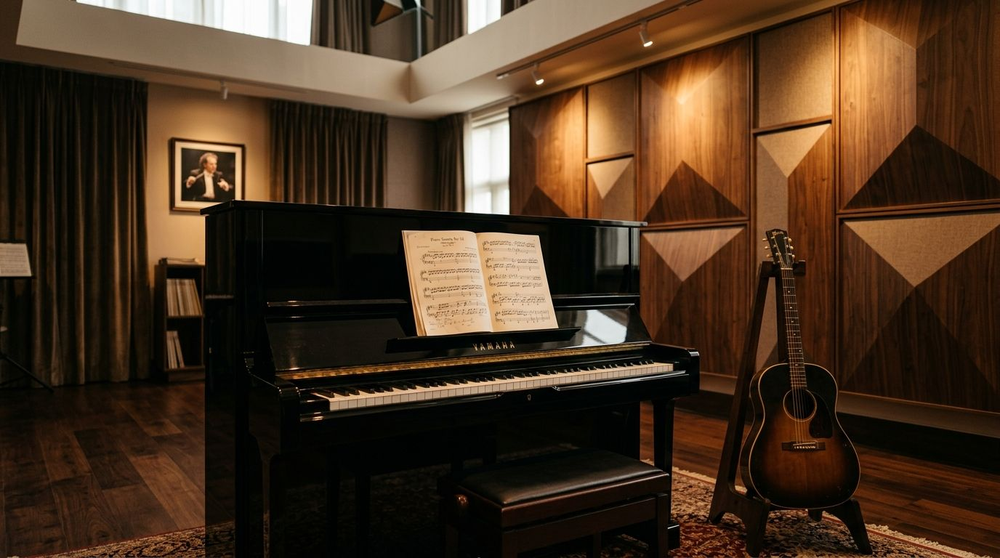
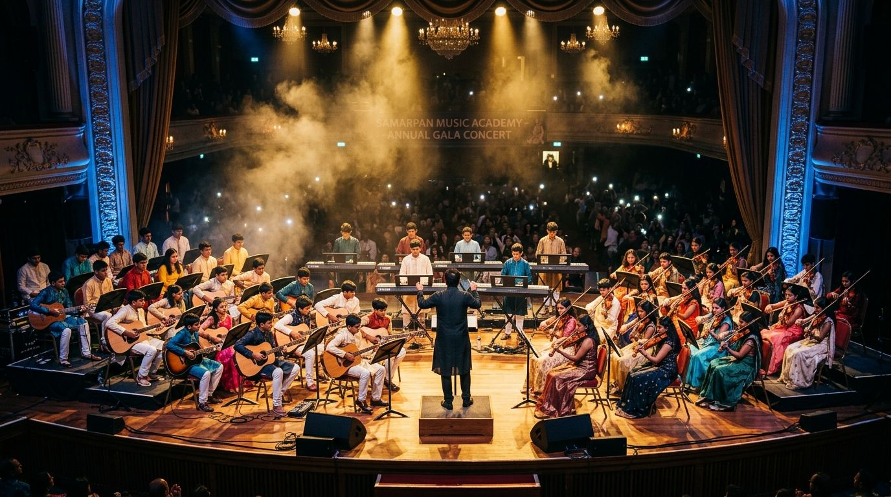
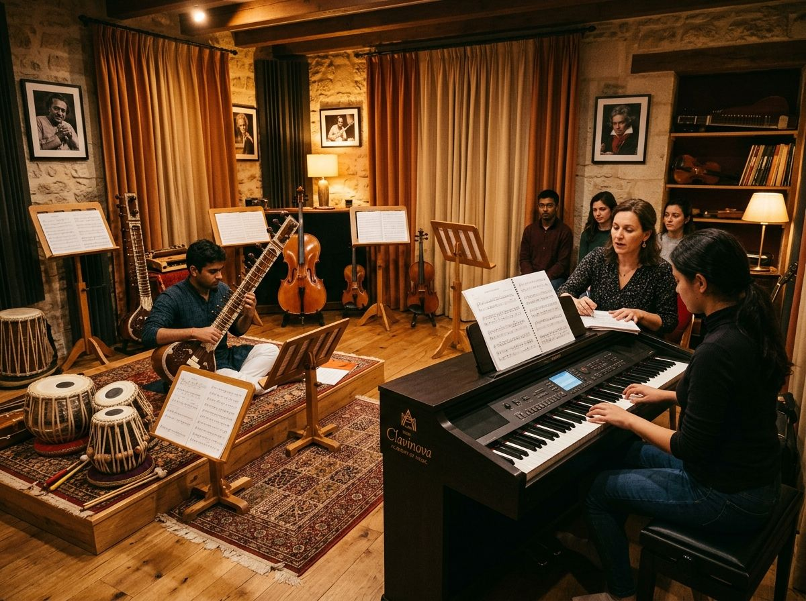

Structured Musical Education for All Ages
Whether starting at age 5 or returning to an instrument in adulthood, our instructors guide you step-by-step with patience and scientific methodology.
 🎹 TRINITY LONDON TRACK
🎹 TRINITY LONDON TRACK
Electronic Keyboard & Piano
Structured in progressive tiers: Indian fundamentals & rhythms, movie songs & chords, Carnatic Geethams & Varnams, Western classical pieces, Grand Stave sheet music, music theory, and Trinity Diploma coaching.
Yamaha 88-Key Weighted LabAcoustic, Classical & Electric Guitar
Proper fretboard grip, open chords, barre chord transitions, fingerstyle plucking, pentatonic scale improvisation, lead tabs, and dynamic rhythm strumming.
Fretboard Ergonomics
🥁 METRONOME TEMPOWestern Drums & Roland Octapad
Conjugated modular syllabus: stick grip & 40 rudiments, Western rock/pop beats, Jazz drumming & swing brushes, Indian cinematic rhythms (Bhangra/Garba), Roland Octapad sampling, and RockSchool diplomas.
Digital Sound Pods
🪘 BANARAS & DELHI GHARANAClassical Indian Tabla
Pure Bols & hand nikas (Ta, Tin, Te, Dha, Dhin, Ge), core Taals (Teentaal, Keherwa, Dadra, Roopak, Jhaptal), Kaidas, Paltas, Tihais, vocal/instrumental Sangat, Layakari math, and Gandharva Visharad diplomas.
Indian Classical Riyaz
🎤 SRUTI & VOICE CULTURECarnatic Classical Vocal & Slokas
Sruti alignment, Sarali, Janta & Dhatu Varisai, Alankaras in sapta taalas, Geethams, Swarajathis, Varnams, Kritis, and authentic Sanskrit devotional slokas.
Voice Culture & Slokas